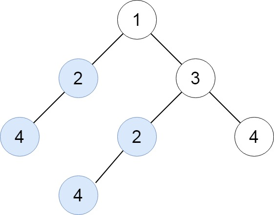
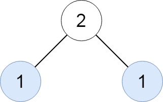
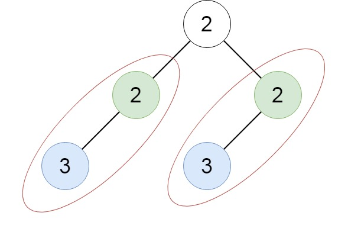

题目
给定一棵二叉树
root，返回所有重复的子树。
对于同一类的重复子树，你只需要返回其中任意一棵的根结点即可。
如果两棵树具有相同的结构和相同的结点值，则它们是重复的。
示例 1：

输入：root = [1,2,3,4,null,2,4,null,null,4]
输出：[[2,4],[4]]
示例 2：

输入：root = [2,1,1]
输出：[[1]]
示例 3：

输入：root = [2,2,2,3,null,3,null]
输出：[[2,3],[3]]
提示：
- 树中的结点数在
[1,10^4]范围内。 -200 <= Node.val <= 200
标签
树, 深度优先搜索, 哈希表, 二叉树
相似题目
题解
哈希表
读完题目很直观的一个想法是：用一个数组将二叉树中的所有结点存下来，然后两两判断是否相同，但两两比较需要一个双重循环进行，这个时候不难想到我们在 LeetCode 的第一题 1. 两数之和 就用到的小技巧，将遍历过的元素存入哈希表，然后再后续查找中只需要在哈希表中进行匹配就能判断是否有符合的元素，这里同样可以使用相同的技巧，可以将二叉树的结构和数值进行序列化后存储在哈希表中，就能边查找边匹配了。
但存入数值中再遍历、序列化显然没有很好的利用到二叉树的“树”型结构，每次序列化都遍历整个子树显然是很冗余的操作，更精巧一点的方法是，在遍历二叉树的同时就进行序列化并进行重复查找的工作，而子树的序列化结果可以用在其父母结点上，从而使效率最高。
PS：注意到二叉树序列化的结果可能很长，所以一个进一步优化的方法是直接将树的结构和数值进行哈希映射而不序列化，将哈希的代价从 \(O(n)\) 降低到 \(O(1)\)，但缺点是需要一个精妙设计的哈希函数并能防止哈希碰撞。我尝试提交了 6 次测试用例中都有出现哈希碰撞的情况，放弃了😂
1 | # Code language: Python |
- 时间复杂度: \(O(n^2)\), 序列化的代价是 \(O(n)\)，遍历的代价是 \(O(n)\)
- 空间复杂度: \(O(n^2)\)
如果对你有帮助的话，请给我点个赞吧~
欢迎前往 我的博客 或 Algorithm - Github 查看更多题解